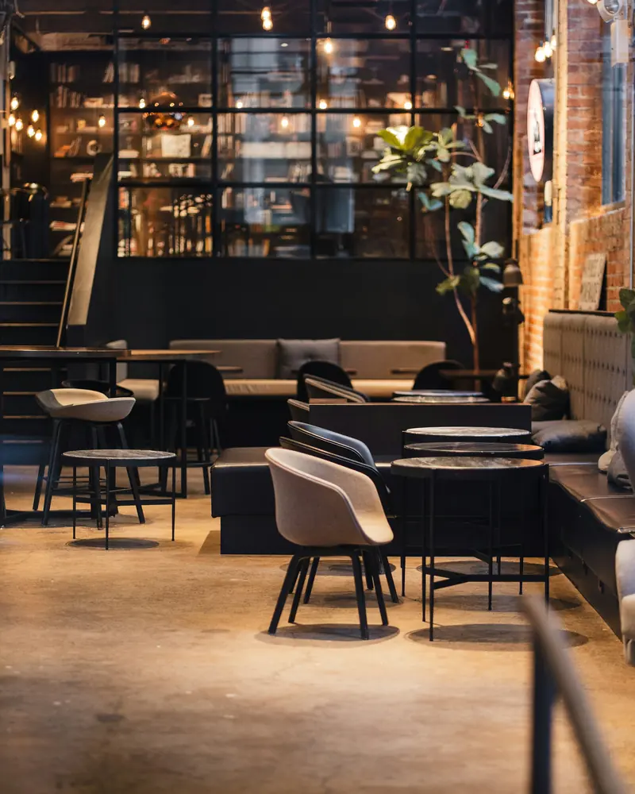
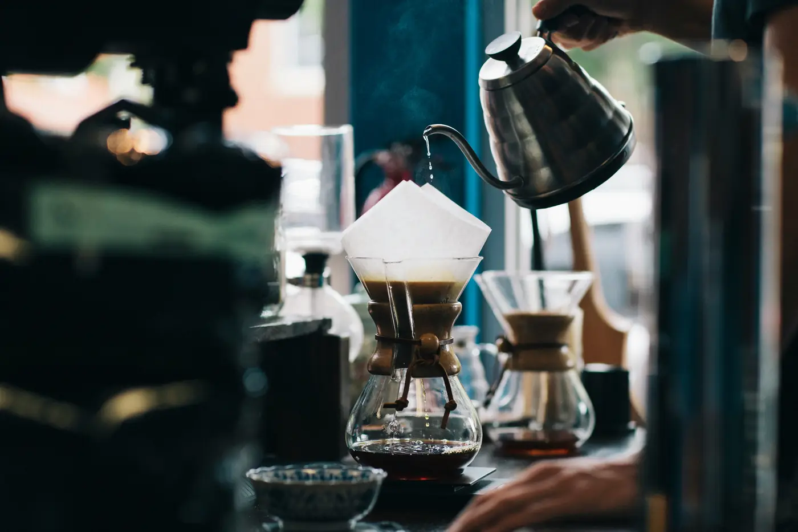

Кофе от фермы до пролива
Specialty-кофейня на Покровке. Зерно обжаривают небольшими партиями, а бариста знает про каждую чашку всё.
Ежедневно 8:00–22:00 Покровка, 17, вход со двора
О кофейне
Мы не описываем кофе прилагательными. Вот что записано в журнале: откуда зерно, как его варят и каким оно получается в чашке.

- Эспрессо-смесь
- Бразилия + Эфиопия
- Во вкусе
- молочный шоколад, орех, лёгкая ягодная кислинка
- Шот
- 36 мл, двойной
- Обжарка
- небольшими партиями
- Фильтр
- зерно недели в воронке V60, 250 мл. Бариста расскажет о ферме и профиле обжарки
- Колд брю
- 18 часов холодной экстракции. Сладкий, с нотами какао и чернослива
от фермы до пролива
Почему к нам заходят

-
Пять способов заварить фильтр
V60, аэропресс, кемекс на двоих, колд брю и эспрессо-тоник. Не знаете, что выбрать — спросите бариста.
-
Круассаны печём каждое утро
На французском сливочном масле. А сырники подаём весь день, не только на завтрак.
-
Открыто каждый день с 8:00 до 22:00
Без выходных. Можно зайти за шотом по дороге на работу или засидеться вечером.
-
Бронь в Telegram за пять шагов
Дата, время, гости, имя, телефон — и столик ваш. Бот сразу пришлёт подтверждение.
Как нас найти
- Адрес
- Москва, ул. Покровка, 17
- Вход
- со двора
- Часы
- ежедневно с 8:00 до 22:00
- Телефон
- +7 (495) 123-45-67
Брони принимаем с 8:00 до 21:00, до 10 гостей. Для компании больше — позвоните, всё организуем.